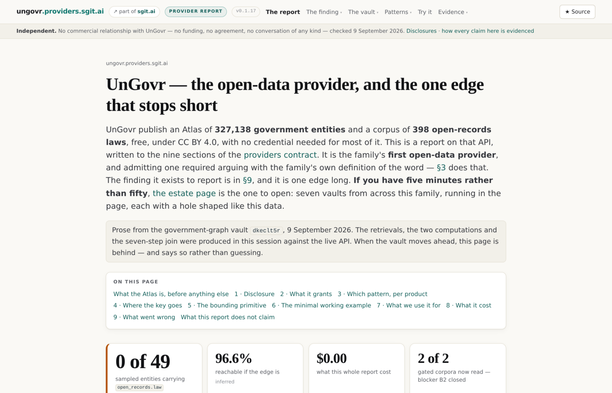
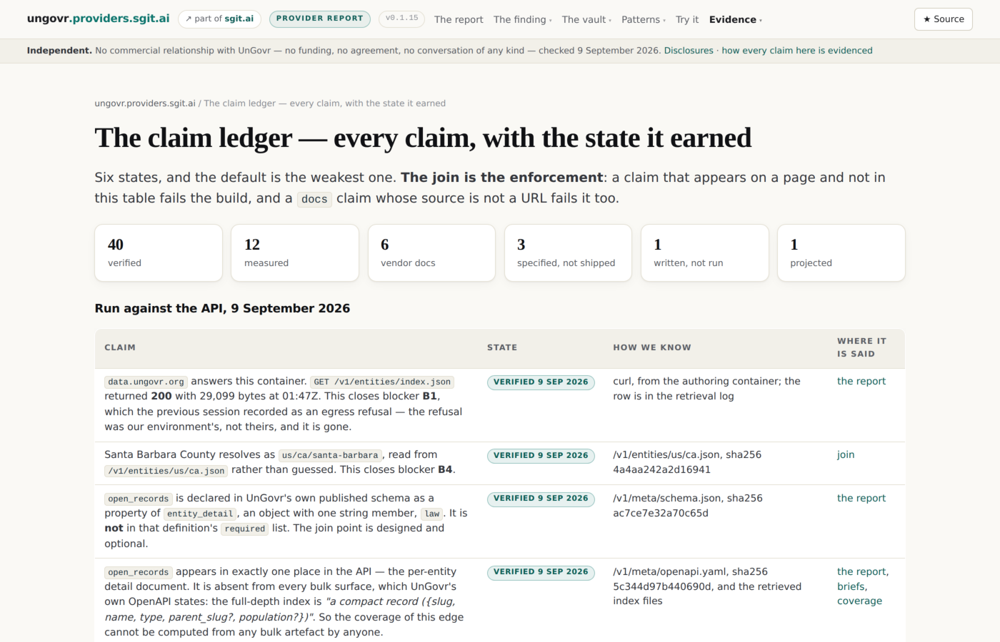
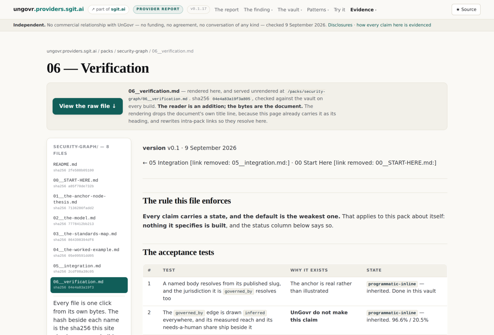
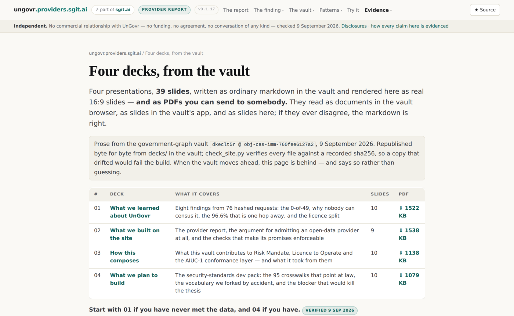
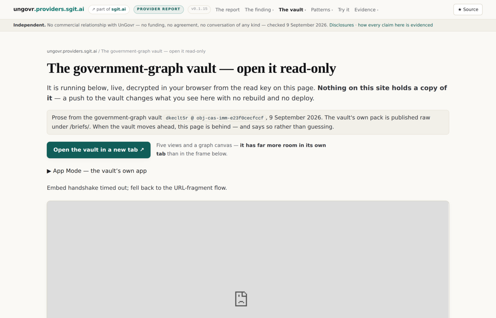

ungovr.providers.sgit.ai / decks / What we built on the site
What we built on the site
A provider report, a gate that enforces it, and the argument for admitting an open-data provider · 9 slides · September 2026
11239acac7618f3e — checked against the vault on every buildThe site, in one line
ungovr.providers.sgit.ai — an independent report on the UnGovr Open Data API, written to the nine sections of the providers contract.
Twelve pages, 39 claims in a ledger, every one carrying a state and a date. Built by build.py with no external dependencies, served from docs/, gated by validate.sh.
The vault is §7 — the named workload. The site reports; the vault is the thing reported on.

The word "provider" did not fit
The family defines it narrowly: "a service that serves models over an API."
UnGovr serve data, not models. By the letter, they do not belong.
The resolution: that definition was a proxy for the real question — where does the credential live, and what bounds it? A provider that answers "there is no credential, and the bound is your IP address" is not an exception to that question. It is the most informative possible answer to it.
So UnGovr is the family's first open-data provider, and the extension is argued on the page rather than assumed.
Three genuinely new rows
| Section | A model provider | UnGovr |
|---|---|---|
| Which pattern | Pattern 0 is a mistake | Pattern 0 is the intended mode. Nothing to leak |
| The bounding primitive | A key scope or plan quota | A rate limit per IP, then HTTP 402. The bound is a payment protocol |
| What it cost | Dollars on a workload | Nothing, inside 100 requests a day |
The comparison matrix gains a row shape it did not have: a provider where pattern 0 is correct.
The gate, not the promise
Every claim the site makes is enforced by a check that fails the build:
- the build is reproducible —
docs/must matchcontent/ - version agreement across every badge, the release history and both machine indexes
- internal links resolve; every canonical is on the host in
CNAME - no root-absolute internal URL — a sibling shipped one and served unstyled for a day
- every claim cited and dated; a
docsclaim without a source URL fails - all nine contract sections present and in order

Four checks this site had to invent
check_tone — refuses the vocabulary that turns a report on a nonprofit into an audit. Scoped to our own prose; /briefs/ is exempt because those are republished verbatim.
check_not_a_defect_count — refuses to publish 0 of 49 on any page that omits the sentence saying what it is not. That sentence is: the measurement is not a defect count. This slide is subject to its own rule, which is why it says it here.
check_no_restricted_corpus — fails if UnGovr's AI-law payload enters the tree. Keyed on the corpus schema id, not on the licence sentence — quoting one sentence to report what it says is the finding, not the redistribution.
check_network_pages — exactly one page may open a connection, and only to the vault origin.

The key discipline
The vault's write key must never enter a public repository. So:
secret-scan.shruns 16 patterns over the whole tree includingdocs/check_site.pycarries the same tripwire a second time- both were wired before any content was written
They deliberately do not match sgit_private_read_…. A read key is publishable — it is how this estate shares a vault — and §7 depends on carrying one.
When an UnGovr API key arrived mid-session, ung_live_ was added to both before the key was used.
The site does not claim to be finished
Of 39 claims: most are verified or measured, and the honest gaps are labelled.
- everything about the payment path is
docs— no 402 was ever returned - the embed shipped
unrununtil somebody watched it work, then moved toverified - one acceptance test regressed on purpose when the release channel was withdrawn
A site whose ledger is all verified has stopped measuring.

Twelve corrections, filed beside the briefs
The packs that commissioned this work are republished raw at /briefs/, unedited, including the parts that turned out to be wrong.
Among them: the coverage plan could not have measured anything (C3); there is no Akoma Ntoso for the CPRA, so an acceptance test is recorded unpassable rather than weakened (C5); the AI-law corpus is far richer than predicted (C8) and not CC BY 4.0 (C9); "do not iframe it" was wrong about the estate's own pattern (C11).
A pack quietly edited to match its outcome proves nothing about the method it argues for.
The division of labour
The vault is where the experiments happen. A push changes what a reader sees, with no rebuild and no deploy. Two of the app's computations — the shape of the 398-law corpus, and what the 16,071 Californian bodies are — exist only there.
The site is the report. It carries the ledger that says how well each thing is known, and it is the thing with a release history and a CI gate.

These slides are rendered from 02__what-we-built.md, republished byte for byte from the vault. The live decks — the same file, parsed by the vault's own app — are in the Decks view of the vault, which moves the moment the vault does. This page moves when the site rebuilds.